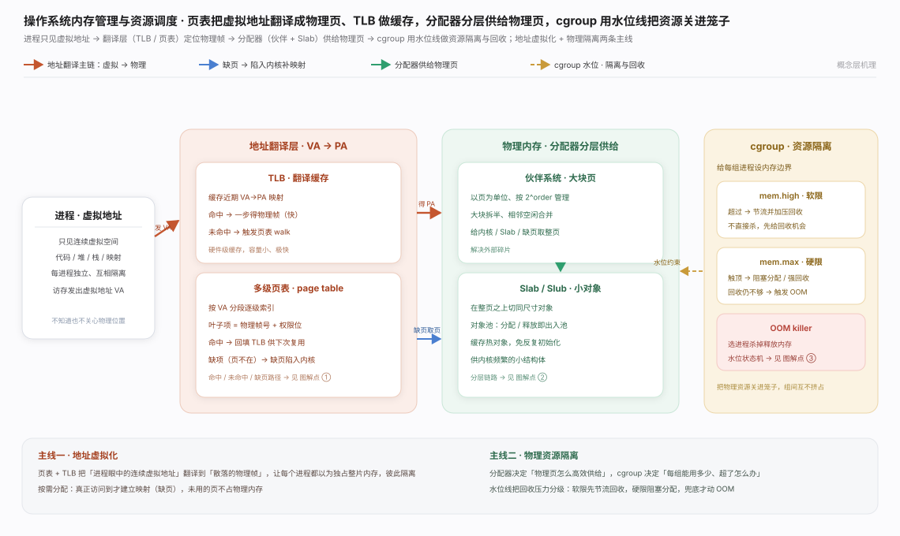
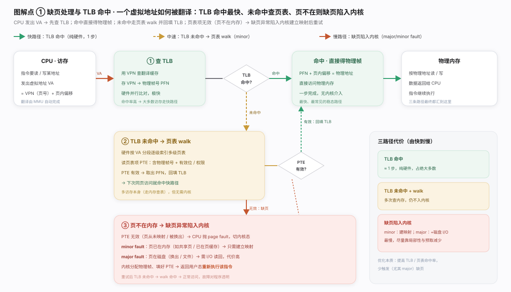
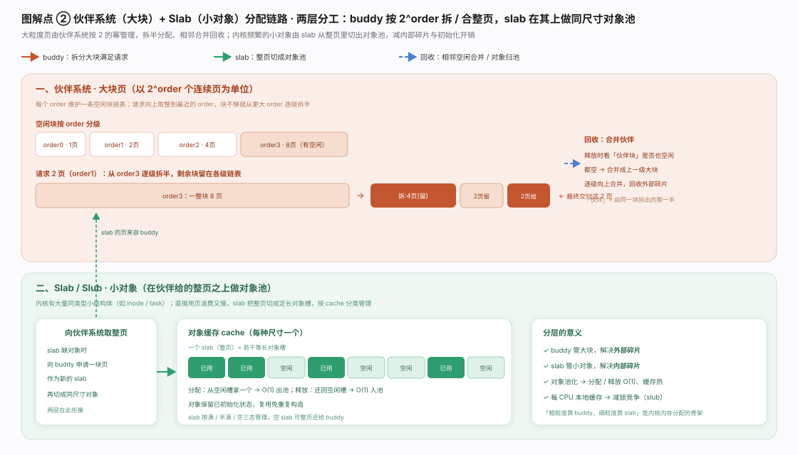
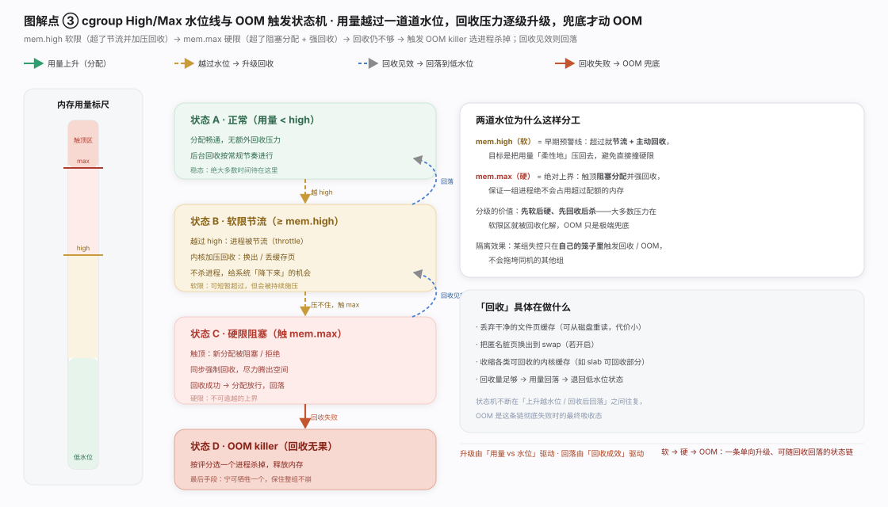
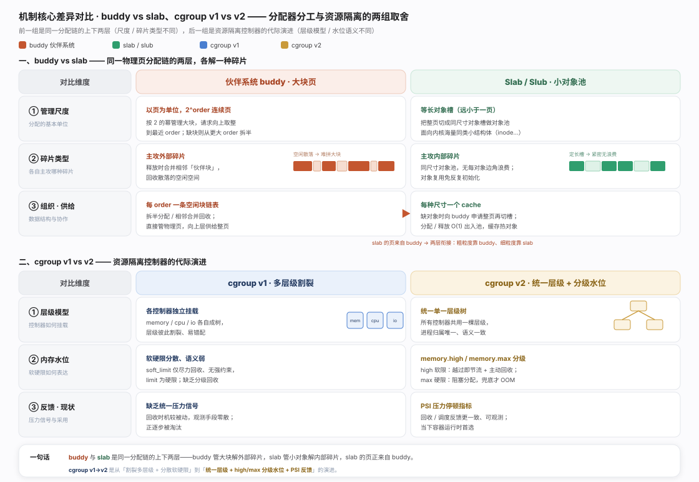
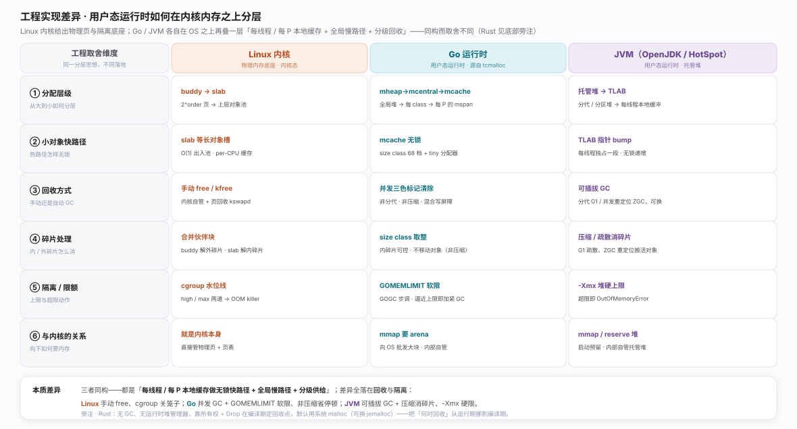

操作系统内存管理同答两件事：每个进程如何拥有一片看似连续、又彼此隔离的地址空间,以及有限物理内存如何在众进程间高效供给且不被某方吃垮。前者靠 页表 + TLB 做地址虚拟化(访问到才建映射);后者靠 伙伴系统／Slab 分配 + cgroup 的 high／max 两道水位线画边界。分工见生态图。

地址翻译按命中概率分三档。MMU 先查 TLB（命中即纯硬件一步拿帧);未命中走页表 walk（硬件逐级索引读 PTE、取帧号回填 TLB);PTE 无效则触发缺页异常陷入内核(minor fault 补建映射、major fault 发起磁盘 I/O),填好 PTE 后重执指令、对程序透明。优化本质是提命中率、少缺页。见图。

物理分配分两层。底层 伙伴系统（buddy）以页为单位按 2^order 组织空闲块（请求向上取整、缺则逐级拆半、释放时合并空闲伙伴块),回收外部碎片;上层 Slab／Slub 面向内核海量同类小结构体,向 buddy 要整页切成等长对象槽、O(1) 出入池,解内部碎片并复用热对象。粗粒度靠 buddy、细粒度靠 slab。见图。

cgroup 内存隔离：两道水位线让回收压力逐级升级。用量低于 memory.high（软限）时畅通;越过即节流 + 主动回收（丢干净页缓存、换出脏页,不杀进程);涨到 memory.max（硬限）则阻塞新分配 + 同步强回收,兜底才触发 OOM killer。整链先软后硬、先回收后杀,且只发生在各组自己笼子里、不波及同机他组。见图。

两组机制各有取舍。buddy vs slab：同一分配链上下两层——buddy 按 2^order 管大块页、合并伙伴块解外部碎片,slab 在整页上切等长对象槽、O(1) 出入池解内部碎片,且 slab 的页正来自 buddy。cgroup v1 vs v2：v1 各控制器独立挂载、层级割裂、语义弱;v2 统一单一层级,引入 memory.high／memory.max 分级水位与 PSI 压力反馈,容器运行时首选。一句话总纲：前一组是分工（尺度／碎片类型),后一组是代际演进（层级模型／水位语义)。见图。

把「用户态运行时如何在内核内存之上分层」并排看,三者惊人同构：都是「每线程／每 P 本地缓存做无锁快路径 + 全局慢路径 + 分级供给」,差异全落在回收与隔离两处。Linux 内核是底座：buddy 管大块页、slab/slub 切等长槽(per-CPU 无锁),回收靠手动 free/kfree + 页回收,隔离靠 cgroup high/max 兜到 OOM killer。Go 运行时向内核 mmap 批发 arena、再叠 tcmalloc 系的 mheap → mcentral → mcache（mcache 每 P 无锁、小对象约 68 档 size class),回收是并发三色标记清除、非分代非压缩(省停顿但不移动对象消外碎片),隔离靠 GOMEMLIMIT + GOGC。JVM（HotSpot）每线程 TLAB 做指针 bump 无锁分配,回收是可插拔 GC（G1 用 Region + RSet、ZGC 用着色指针 + 读屏障并发重定位),多数收集器压缩／疏散搬活对象消碎片,隔离靠 -Xmx 硬上限(超限 OutOfMemoryError)。
一句话：本地缓存快路径人人都做,分野在回收（手动 vs 并发 GC vs 可插拔 GC）与隔离（cgroup 关笼子 vs runtime 软／硬限额）。旁注 Rust 走第四条路——无 GC、无运行时堆管理器,靠所有权 + Drop 在编译期定回收点(默认系统 malloc、可换 jemalloc),把「何时回收」从运行期挪到编译期。Go / JVM / Linux 的细节已在本库 [Go 内存分配器](../../projects/go/)、[OpenJDK 可插拔 GC](../../projects/openjdk/)、[Linux 虚拟内存](../../projects/linux/) 中源码核实。权威依据：Go GC Guide、HotSpot GC Tuning Guide、Linux MM docs、tcmalloc。